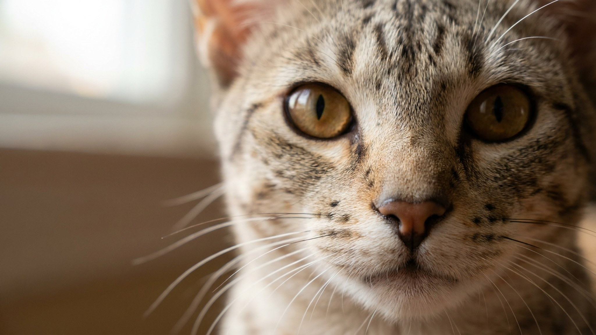

Оцикет выглядит так, будто сбежал из саванны: пятна по всему телу, мускулистое тело, взгляд охотника. Но в его родословной нет ни капли дикой крови — это чистая иллюзия, собранная заводчиками из домашних пород. И сюрприз внутри ещё больше внешнего: по повадкам оцикет ближе к собаке, чем к типичной кошке. Разберём, откуда взялись пятна, почему его зовут «кошка-собака» и кому он подойдёт.
🐾 Здоровье питомца под контролем
AI-ветеринар, дневник здоровья и персональные советы для вашего питомца — установите AnimaLife бесплатно.
В отличие от бенгала или саванны, у оцикета нет предков-дикарей. Порода появилась случайно в 1960-х при скрещивании сиамской, абиссинской и американской короткошёрстной кошек — и заводчики закрепили эффектный пятнистый окрас. Результат — «дикий» вид при полностью домашнем темпераменте: мускулистое тело, пятна, как у оцелота, но нрав ручной кошки.
Это довольно крупная и атлетичная кошка: коты нередко весят 5–7 кг. Пятнистый рисунок признан в целой палитре окрасов — от тёплого бронзово-коричневого до голубого и серебристого. Каждая шерстинка окрашена зонами (тиккинг от абиссинского предка), поэтому на солнце шубка буквально мерцает.
Оцикет — экстраверт до кончика хвоста. Он встречает у двери, ходит за хозяином по пятам, легко учится приносить игрушку, откликаться на кличку и даже гулять на шлейке. Одиночество и скуку переносит плохо: это кошка «для людей». Многие оцикеты обожают воду и с интересом лезут проверять кран или ванну.
С шерстью всё элементарно: короткая, плотно прилегающая, почти не требует забот — вычёсывания раз в неделю достаточно. Настоящая забота — занять деятельный ум и мускулистое тело.
🐾 Первая помощь — всегда под рукой
AnimaLife подскажет, что делать в тревожной ситуации с питомцем ещё до визита к врачу. Откройте в один тап.
🐾 Понравился разбор?
Подпишитесь на канал — каждый день разбираем по одному тревожному симптому у кошек и собак: что в пределах нормы, а когда пора к врачу. Подпишитесь, чтобы не пропустить разбор, который может спасти здоровье вашего питомца.
Оцикет — для активной семьи или человека, который много бывает дома и хочет кошку-компаньона, а не украшение на полке. Он подарит эффектную «дикую» внешность и характер преданного, общительного друга. А вот тем, кому нужна тихая самостоятельная кошка «сама по себе», порода не подойдёт. Оцикет в целом крепок; как обычно, стоит спокойно наблюдать за весом и зубами, а новые изменения в поведении обсуждать с ветеринаром на плановом осмотре.
Материал носит информационный характер и не заменяет очную консультацию ветеринара.